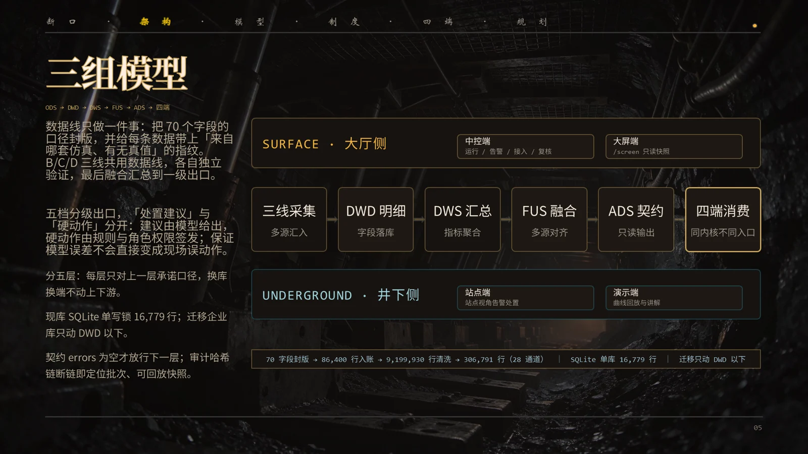
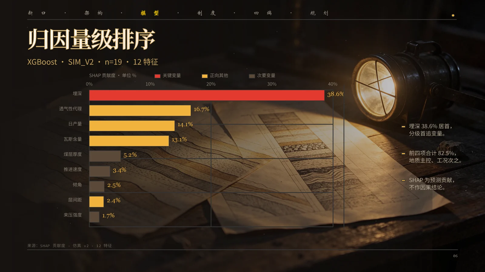
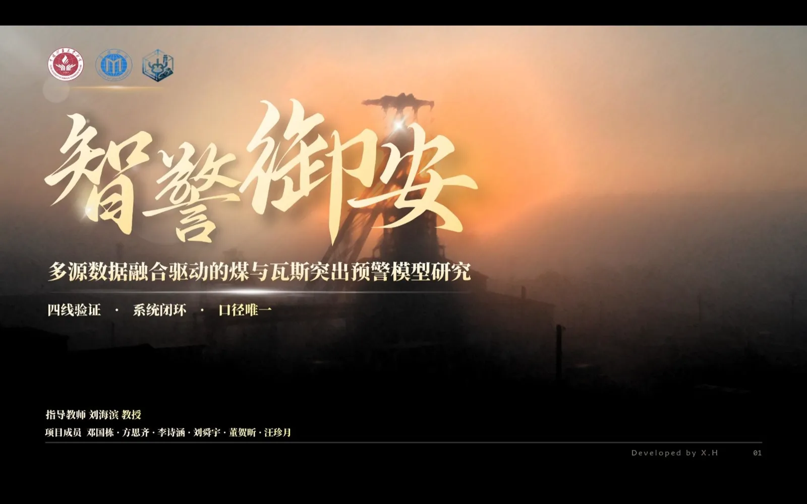

智警御安
多源数据融合驱动的煤与瓦斯突出预警模型研究
四条模型线已完成，四端系统已上线，五道可信度校验全部通过，2026 年 11 月 19 日完成中期答辩。 现面向 2027 年「挑战杯」课外学术科技作品竞赛，招募 2 名主力成员。
项目简介
系统现状
System status判定内核 0.2.63-r181，四端（中控台、服务器端、井下站点、演示端）共用；SQLite 单库 16,779 行， 服务 API 8790，链路覆盖数据接入、规则判定与告警输出。
现状说明
- 界面尚未完成视觉设计。四端为可运行的最小可用版本，功能可用、样式未打磨；界面重构列为挑战杯前的工作项。
- 系统连续运行约两周。“12/12 测点在线、0 告警”为该周期内的实机记录，不构成长期稳定性结论。
- 真实矿井数据尚未接入。当前全部结论基于公开数据集与自建仿真集。

四条模型线
Model lines
数据治理
原始记录 86,400 条入库，扩展至 306,791 条样本（28 通道）；70 字段封版，246 点结果台账，指标口径唯一。

因果归因
DAG 16 条边、贝叶斯网络与 SHAP 双向互证，方向一致率 100%。埋深单项贡献 38.6%，前四项合计 82.5%。

时序预测
ARIMA、LSTM 与融合模型三段推进，MAE 2.381 → 1.948 → 1.788；三折回测与公开数据集（Sikora & Wróbel, 2014）均设对照。
图内为时序回测对照指标（R² 与相对基线偏差）。

空间外推
IDW 与克里金采用留点交叉，量化跨地质单元的精度代价：单元内 R² 0.995，全局转负，变程 1,642 m。
项目进展
Progress立项申报
校级大创，经费 6,600 元，指导教师刘海滨（管理学院教授）
已完成双轨数据与四线模型
公开数据集（Sikora & Wróbel, 2014）与自建仿真集 v1／v2
已完成四端上线 · 验收规范 v1.17
五道校验通过，246 点台账封版
已完成中期答辩
14 页项目介绍与 28 问预设问答集；评审肯定进展，并提出模型有效性改进意见
已完成成员招募与组队
本页事项，面试与分工确认
进行中挑战杯校级申报与答辩
名单确认后，复赛阶段仅可删减成员
待启动以下三项为当前主要短板，报名前应予知悉。
缺少真实矿井数据
现用公开数据集与自建仿真集，真实数据签约流程尚未完成。
跨单元外推精度转负
单元内 R² 0.995，跨地质单元降至负值，边界效应构成主要误差来源。
实践环节材料不足
评审指标中“实践过程”占 25 分，现缺矿方走访、访谈与试用记录。
作品形态
Deliverable申报作品为“方法与系统”：以四线模型、四端系统与五道校验构成可复现的方法体系，论文与专利为副线，署名按贡献排序。 下列页面取自项目介绍材料；界面部分为最小可用版本，答辩前须完成一轮重构。



招募计划
Recruitment团队编制
校级赛事团队上限 8 人。现有成员 6 人，来自大数据管理与应用、管理科学与工程、计算机等方向，覆盖数据建模、系统开发与论文写作；本次招募 2 人，合计 8 人。
现有成员均为在校学生，另有课业与考试安排，合计投入约相当于 3 个全职当量，可承接任务并按期交付，但无法全程驻线。
赛事经验
团队已完成校级大创立项、四线模型复现、四端系统上线与《验收规范 v1.17》编制，并通过中期答辩；具备申报书撰写、图表制版、问答库准备与现场答辩的完整参赛经验，新成员可直接沿用既有方法与素材，不必从零摸索。

技术与作品主笔
职责
- 复现三条模型线实验，补充跨单元分层对照实验
- 撰写 8,000 字级申报书主体与配套论文
- 维护图表规范与指标口径，保证全文一致
要求
- Python、交叉验证、空间插值可在参与后学习
- 重点考察执行完整性与自我驱动，不设技能硬门槛

落地、答辩与实践
职责
- 完成四端系统演示版本，制作 3 分钟演示视频
- 承担 PPT 制版、答辩稿、问答库与现场答辩
- 兼实践调研：矿方走访、访谈记录、试用证明
要求
- 前端、剪辑、排版可在参与后学习，项目提供素材与模板
- 重点考察对外沟通与材料整理能力
工作事项（分工为初步安排，仅供参考，具体以实际执行情况为准）
| 工作事项 | 主责 | 协作 |
|---|---|---|
| 申报书主体与论文 | 岗位一 | 现有成员：文献、图表、口径 |
| 跨单元分层对照实验 | 岗位一 | 现有成员：数据、脚本 |
| 数据清洗与台账核对 | 现有成员 | 岗位一验收 |
| 系统演示版本与视频 | 岗位二 | 现有成员：部署、录屏 |
| PPT、答辩稿与问答库 | 岗位二 | 现有成员：素材、审校 |
| 实践调研与矿方走访 | 岗位二 | 指导教师对接 |
| 查新、软著与专利检索 | 现有成员 | 岗位二汇总 |
| 节点控制与对外沟通 | 项目组 | 全体成员 |
准入条件 · 四项
招募对象：本科一年级、二年级。
参与条件
Terms项目提供
- 已跑通的完整项目底座与实验环境
- 全部材料、代码、246 点台账与审计报告
- 指导教师（管理学院教授）全程指导
- 论文稿费与专利申请费由项目经费承担
- 现有 6 人约 3 个当量的分工支援
- 成熟的答辩与写作方法
成员需承担
- 学期内每周投入不超过 5 小时，寒假视项目进展而定
- 独立完成文献检索与实验
- 在真实数据未接入的条件下推进工作
- 2027 年 1 月前完成申报书定稿
- 署名按实际贡献排序
项目不作承诺
- 不承诺获奖
- 不承诺代写论文或代做实验
- 不承诺无贡献署名
- 经费按学校规定据实报销，不设额外额度